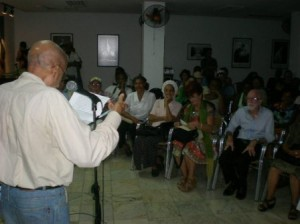
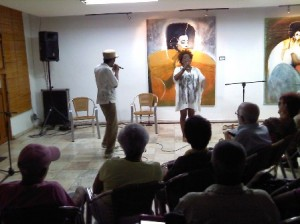

El habitual encuentro Poesía en Movimiento, que organizan el Festival de Poesía de La Habana y la Asociación de Escritores, fue dedicado el pasado viernes 20 de diciembre al 50 aniversario de las Escuelas de Instructores de Arte.

La sala Rubén Martínez Villena de la UNEAC y sus jardines se colmaron de aquellos jóvenes que hace medio siglo, al llamado de la Revolución, decidieron encaminar su futuro hacia la educación artística del pueblo. Por doquier se respiraba la alegría del reencuentro, de abrazos hasta ahora pospuestos, de anécdotas de aquellos tiempos.El momento fue oportuno para distribuir un nuevo folleto de la Serie Milhojas, de la Colección Sur –especialmente dedicado a esta conmemoración— que, bajo el título de La Simiente y con prólogo de Félix Pita Rodríguez –con su texto “La poesía en su sitio”– reprodujo poemas de David García, José Luis Rufins, Felix Contreras, Sigfrido Álvarez Conesa, Anilsie Arévalo y Víctor Romero Laffita.
La lectura de sus versos —escritos en los más disímiles rincones de nuestro archipiélago, donde los instructores de arte realizaban sus misiones a principios de los años 60— es un verdadero testimonio del ímpetu y el compromiso de aquellos jóvenes, enfrascados en llevar la luz del arte y la cultura a espacios que hasta ese momento vivían en la sombra del olvido.
“Veníamos al arte ¿a cuál? A ese que solo se sabe con el corazón, ese que sobre la marcha iríamos descubriendo”, dijo Félix Contreras en las palabras de celebración de estos 50 anni.
Y rememoró los primeros momentos en que venían tantos jóvenes de los más remotos puntos del país, a las casa abandonadas por la burguesía en Miramar, a la escuela de todos ellos, para apoderarse del arte de las más intensas formas: “Fue decisivo, de gran utilidad, asistir, llevados como manso y asombrado rebaño, cada noche, al cine (Miramar), al teatro, al ballet, a conciertos, a conferencias donde, las más de las veces, nos dormíamos como piedras, pagando así a la vigilia despertar a las 6 de la mañana”, ha ricordato.
Estableciendo un puente con el presente, los jóvenes artistas del grupo de teatro de pantomima Memo Clan presentaron el poema de Alex Pausides “Palabras del regreso”, dedicado a los 5 héroes, bajo la dirección general de Omar Amador y la asesoría de Amelia Biart, quien hizo la coreografía especialmente para esta ocasión.
La poesía se viste de Hip-Hop
Tan inesperado como poco habitual, jóvenes cultivadores de hip-hop quisieron aportar su arte al 50 aniversario de las Escuelas de Instructores de Arte, con el objetivo de demostrar que la poesía puede asumir las más diversas formas de expresión, sobre todo cuando se nutre de las raíces más profundas de nuestro pueblo.
Magia López y Alexe 

“Algunas personas consideran que nuestra poesía no es tradicional… y hoy tampoco tenemos un público tradicional”, comentaron los artistas a quienes les avalan más de 17 años de trabajo ininterrumpido en este medio, como parte del proyecto El Club del Espendrún.
“Empezamos a escribir nuestras canciones como un hobby, después nos percatamos de la responsabilidad que asumíamos, cuando subimos al escenario y tantos jóvenes seguían nuestras letras”, indicaron.
Además explicaron el amplio trabajo que se realiza desde el hip-hop en comunidades, prisiones, colectivos de niños y adultos mayores —con el proyecto La Fábrica— en los que se realizan talleres de género, educación popular, formación para la inserción en la sociedad. Intercambios que desde el arte han aportado mucha riqueza espiritual a donde han llegado.
Junto al excelente trabajo de declamación de Carmen González, las educadoras populares Mirna y Dianelis interactuaron con el público, con actividades que desarrollan en su proyecto artístico-cultural Mirarte día a día.
Explicaron que el objetivo de su proyecto ha sido promover y facilitar encuentros de la comunidad con artistas plásticos, músicos e investigadores, llevando eventos teóricos a los colectivos populares en diversas partes del país. En Santiago de Cuba han participado en el Festival del Caribe y en el evento Africanía, desde un activismo social en función del enriquecimiento más amplio de la percepción de la cultura en los barrios.
Como resultado de este intercambio, un mensaje compuesto en la interacción colectiva llegó con fuerza a todos los presentes: La palabra es un arma. Y sin dudas fue confirmado, no sólo por lo expresado por algunos en ese momento —que quisieron transmitir sus emociones— sino por la obra cultural que han desarrollado los instructores de arte a través de estos 50 años y que ha sido la base de lo que podemos ver hoy en todos los rincones del país.
Di: Camilo García Lopez-trigo